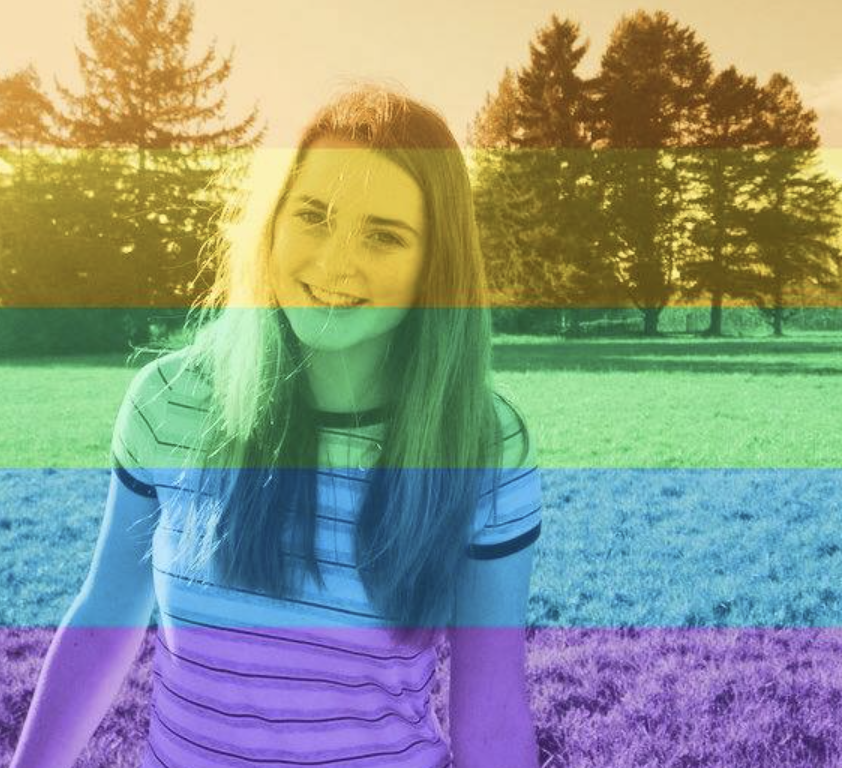
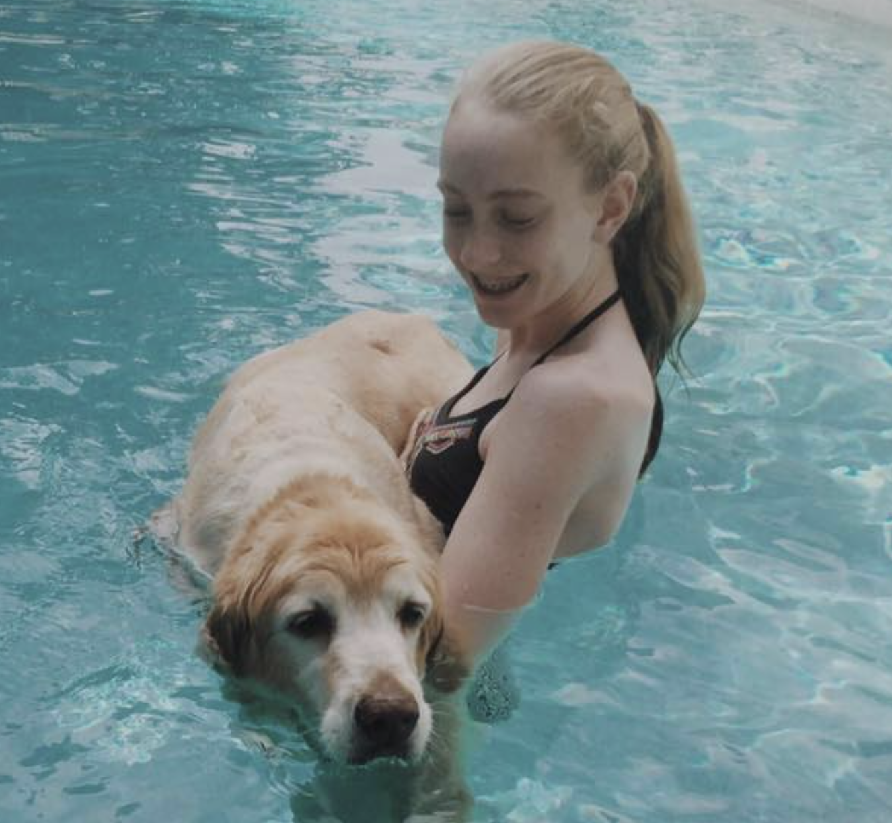
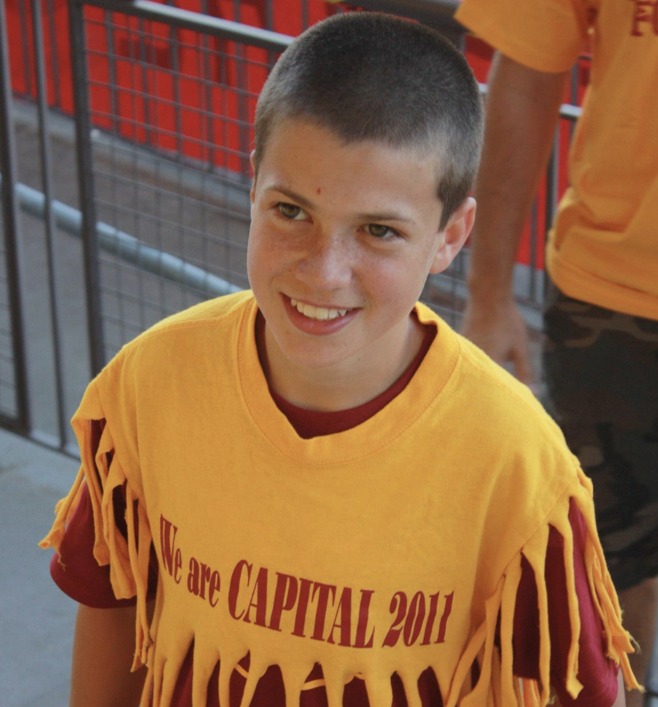
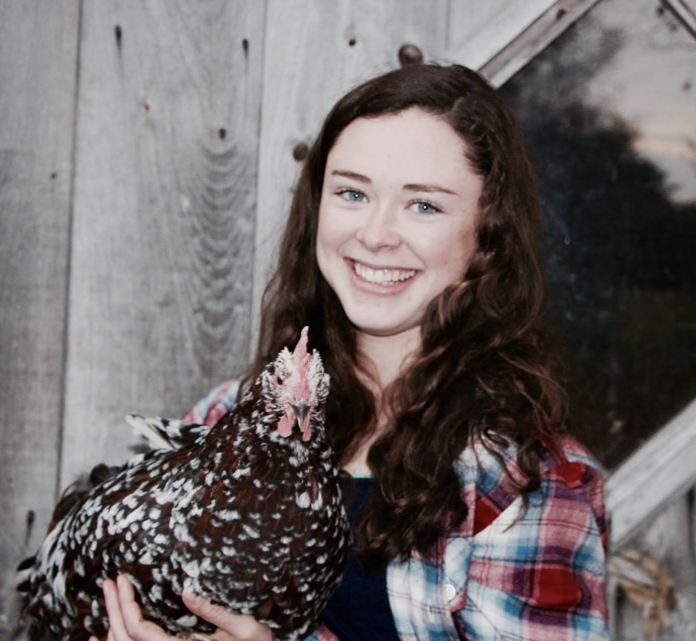
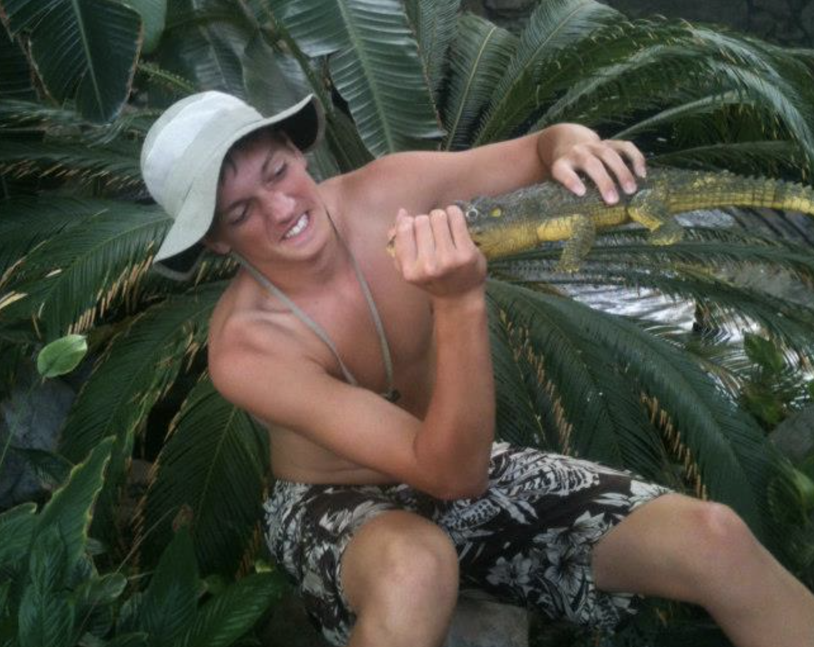
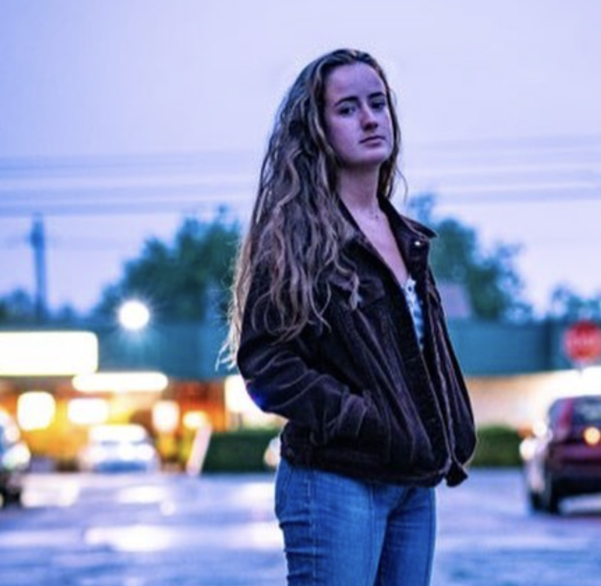

Skip Animation
Milano-Cortina 2026 Fantasy Country Draft
Updated: 2026-02-17 15:31 UTC
#1
Ian
🥇🥇🥇🥇🥇🥇🥇🥇🥇🥇🥇🥇🥇🥈🥈🥈🥈🥈🥈🥈🥈🥈🥈🥈🥉🥉🥉🥉🥉🥉🥉🥉🥉🥉🥉🥉🥉🥉🥉
🇫🇷 France & 🇮🇹 Italy
76.0
🏆 Medal Events
🇫🇷 France
🥈 Women's Alpine skiing: Super-G
(Romane Miradoli)
🥈 Men's Biathlon: Individual
(Éric Perrot)
🥇 Men's Biathlon: Sprint
(Quentin Fillon Maillet)
🥉 Men's Biathlon: Pursuit
(Émilien Jacquelin)
🥇 Women's Biathlon: Individual
(Julia Simon)
🥈 Women's Biathlon: Individual
(Lou Jeanmonnot)
🥈 Women's Biathlon: Sprint
(Océane Michelon)
🥉 Women's Biathlon: Sprint
(Lou Jeanmonnot)
🥇 Mixed Biathlon: Relay
🥈 Men's Cross-country skiing: 10 kilometre freestyle
(Mathis Desloges)
🥈 Men's Cross-country skiing: 20 kilometre skiathlon
(Mathis Desloges)
🥈 Men's Cross-country skiing: 4 × 7.5 kilometre relay
🥇 Figure skating: Ice dance
🥉 Women's Freestyle skiing: Moguls
(Perrine Laffont)
🥉 Mixed Snowboarding: Team snowboard cross
🥇
Event details pending
🇮🇹 Italy
🥈 Men's Alpine skiing: Downhill
(Giovanni Franzoni)
🥉 Men's Alpine skiing: Downhill
(Dominik Paris)
🥉 Women's Alpine skiing: Downhill
(Sofia Goggia)
🥇 Women's Alpine skiing: Super-G
(Federica Brignone)
🥇 Women's Alpine skiing: Giant slalom
(Federica Brignone)
🥇 Women's Biathlon: Pursuit
(Lisa Vittozzi)
🥈 Mixed Biathlon: Relay
🥉 Men's Cross-country skiing: 4 × 7.5 kilometre relay
🥉 Curling: Mixed doubles
🥉 Figure skating: Team event
🥉 Women's Freestyle skiing: Big air
(Flora Tabanelli)
🥉 Luge: Men's singles
(Dominik Fischnaller)
🥇 Luge: Men's doubles
🥇 Luge: Women's doubles
🥉 Luge: Team relay
🥈 Women's Short track speed skating: 500 metres
(Arianna Fontana)
🥇 Mixed Short track speed skating: 2000 metre relay
🥉 Women's Snowboarding: Parallel giant slalom
(Lucia Dalmasso)
🥉 Women's Snowboarding: Snowboard cross
(Michela Moioli)
🥈 Mixed Snowboarding: Team snowboard cross
🥉 Men's Speed skating: 5000 metres
(Riccardo Lorello)
🥇 Women's Speed skating: 3000 metres
(Francesca Lollobrigida)
🥇 Women's Speed skating: 5000 metres
(Francesca Lollobrigida)
#2
Travis
🥇🥇🥇🥇🥇🥇🥇🥇🥇🥈🥈🥈🥈🥈🥈🥈🥈🥈🥈🥈🥈🥈🥉🥉🥉🥉🥉🥉🥉🥉🥉🥉🥉🥉
🇦🇹 Austria & 🇯🇵 Japan
67.0
🏆 Medal Events
🇦🇹 Austria
🥈 Men's Alpine skiing: Slalom
(Fabio Gstrein)
🥉 Women's Alpine skiing: Super-G
(Cornelia Hütter)
🥇 Women's Alpine skiing: Team combined
🥈 Luge: Men's singles
(Jonas Müller)
🥈 Luge: Men's doubles
🥉 Luge: Women's doubles
🥈 Luge: Team relay
🥈 Nordic combined: Individual large hill/10 km
(Johannes Lamparter)
🥈 Nordic combined: Individual normal hill/10 km
(Johannes Lamparter)
🥇 Skeleton: Women's
(Janine Flock)
🥇 Men's Ski jumping: Men's large hill super team
🥇 Men's Snowboarding: Parallel giant slalom
(Benjamin Karl)
🥇 Men's Snowboarding: Snowboard cross
(Alessandro Hämmerle)
🥉 Men's Snowboarding: Snowboard cross
(Jakob Dusek)
🥈 Women's Snowboarding: Parallel giant slalom
(Sabine Payer)
🥈
Event details pending
🇯🇵 Japan
🥈 Figure skating: Men's singles
🥉 Figure skating: Men's singles
🥇 Figure skating: Pair skating
🥈 Figure skating: Team event
🥉 Men's Freestyle skiing: Moguls
(Ikuma Horishima)
🥈 Men's Freestyle skiing: Dual moguls
(Ikuma Horishima)
🥈 Men's Ski jumping: Men's large hill individual
(Ren Nikaidō)
🥉 Women's Ski jumping: Women's normal hill individual
(Nozomi Maruyama)
🥉 Mixed Ski jumping: Mixed normal hill team
🥇 Men's Snowboarding: Big air
(Kira Kimura)
🥈 Men's Snowboarding: Big air
(Ryoma Kimata)
🥇 Men's Snowboarding: Halfpipe
(Yūto Totsuka)
🥉 Men's Snowboarding: Halfpipe
(Ryusei Yamada)
🥇 Women's Snowboarding: Big air
(Kokomo Murase)
🥉 Women's Snowboarding: Halfpipe
(Mitsuki Ono)
🥉 Women's Speed skating: 500 metres
(Miho Takagi)
🥉 Women's Speed skating: 1000 metres
(Miho Takagi)
🥉
Event details pending
#3

Hannah
🥇🥇🥇🥇🥇🥇🥇🥇🥇🥈🥈🥈🥈🥈🥈🥉🥉
🇳🇱 Netherlands & 🇦🇺 Australia
44.0
🏆 Medal Events
🇳🇱 Netherlands
🥇 Men's Short track speed skating: 1000 metres
(Jens van 't Wout)
🥇 Men's Short track speed skating: 1500 metres
(Jens van 't Wout)
🥇 Women's Short track speed skating: 500 metres
(Xandra Velzeboer)
🥇 Women's Short track speed skating: 1000 metres
(Xandra Velzeboer)
🥈 Men's Speed skating: 500 metres
(Jenning de Boo)
🥈 Men's Speed skating: 1000 metres
(Jenning de Boo)
🥉 Men's Speed skating: 10,000 metres
(Jorrit Bergsma)
🥇 Women's Speed skating: 500 metres
(Femke Kok)
🥈 Women's Speed skating: 500 metres
(Jutta Leerdam)
🥇 Women's Speed skating: 1000 metres
(Jutta Leerdam)
🥈 Women's Speed skating: 1000 metres
(Femke Kok)
🥈 Women's Speed skating: 5000 metres
(Merel Conijn)
🇦🇺 Australia
🥇 Men's Freestyle skiing: Moguls
(Cooper Woods-Topalovic)
🥉 Men's Freestyle skiing: Dual moguls
(Matt Graham)
🥇 Women's Freestyle skiing: Dual moguls
(Jakara Anthony)
🥈 Men's Snowboarding: Halfpipe
(Scotty James)
🥇 Women's Snowboarding: Snowboard cross
(Josie Baff)
#4

Elysse
🥇🥇🥇🥇🥇🥇🥇🥇🥇🥇🥇🥇🥇🥇🥇🥈🥈🥈🥈🥈🥈🥈🥈🥈🥈🥉🥉🥉🥉🥉🥉🥉🥉🥉
🇳🇴 Norway & 🇨🇿 Czech Republic
42.5
🏆 Medal Events
🇳🇴 Norway
🥉 Men's Alpine skiing: Slalom
(Henrik Kristoffersen)
🥇 Men's Biathlon: Individual
(Johan-Olav Botn)
🥉 Men's Biathlon: Individual
(Sturla Holm Lægreid)
🥈 Men's Biathlon: Sprint
(Vetle Sjåstad Christiansen)
🥉 Men's Biathlon: Sprint
(Sturla Holm Lægreid)
🥈 Men's Biathlon: Pursuit
(Sturla Holm Lægreid)
🥇 Women's Biathlon: Sprint
(Maren Kirkeeide)
🥈 Women's Biathlon: Pursuit
(Maren Kirkeeide)
🥇 Men's Cross-country skiing: 10 kilometre freestyle
(Johannes Høsflot Klæbo)
🥉 Men's Cross-country skiing: 10 kilometre freestyle
(Einar Hedegart)
🥇 Men's Cross-country skiing: 20 kilometre skiathlon
(Johannes Høsflot Klæbo)
🥉 Men's Cross-country skiing: 20 kilometre skiathlon
(Martin Nyenget)
🥇 Men's Cross-country skiing: 4 × 7.5 kilometre relay
🥇 Men's Cross-country skiing: Sprint classical
(Johannes Høsflot Klæbo)
🥉 Men's Cross-country skiing: Sprint classical
(Oskar Opstad Vike)
🥉 Women's Cross-country skiing: 20 kilometre skiathlon
(Heidi Weng)
🥇 Women's Cross-country skiing: 4 × 7.5 kilometre relay
🥇 Men's Freestyle skiing: Slopestyle
(Birk Ruud)
🥇 Nordic combined: Individual large hill/10 km
(Jens Lurås Oftebro)
🥇 Nordic combined: Individual normal hill/10 km
(Jens Lurås Oftebro)
🥉 Men's Ski jumping: Men's large hill super team
🥇 Women's Ski jumping: Women's normal hill individual
(Anna Odine Strøm)
🥇 Women's Ski jumping: Women's large hill individual
(Anna Odine Strøm)
🥈 Women's Ski jumping: Women's large hill individual
(Eirin Maria Kvandal)
🥈 Mixed Ski jumping: Mixed normal hill team
🥇 Men's Speed skating: 5000 metres
(Sander Eitrem)
🥈 Women's Speed skating: 3000 metres
(Ragne Wiklund)
🥉 Women's Speed skating: 5000 metres
(Ragne Wiklund)
🥈
Event details pending
🥈
Event details pending
🇨🇿 Czech Republic
🥇 Women's Snowboarding: Parallel giant slalom
(Zuzana Maděrová)
🥈 Women's Snowboarding: Snowboard cross
(Eva Adamczyková)
🥈 Men's Speed skating: 5000 metres
(Metoděj Jílek)
🥇 Men's Speed skating: 10,000 metres
(Metoděj Jílek)
#5
Sam
🥇🥇🥇🥇🥇🥇🥇🥇🥇🥇🥇🥇🥇🥇🥇🥈🥈🥈🥈🥈🥈🥈🥈🥈🥉🥉🥉🥉🥉🥉🥉🥉🥉🥉
🇳🇴 Norway & 🇸🇮 Slovenia
41.5
🏆 Medal Events
🇳🇴 Norway
🥉 Men's Alpine skiing: Slalom
(Henrik Kristoffersen)
🥇 Men's Biathlon: Individual
(Johan-Olav Botn)
🥉 Men's Biathlon: Individual
(Sturla Holm Lægreid)
🥈 Men's Biathlon: Sprint
(Vetle Sjåstad Christiansen)
🥉 Men's Biathlon: Sprint
(Sturla Holm Lægreid)
🥈 Men's Biathlon: Pursuit
(Sturla Holm Lægreid)
🥇 Women's Biathlon: Sprint
(Maren Kirkeeide)
🥈 Women's Biathlon: Pursuit
(Maren Kirkeeide)
🥇 Men's Cross-country skiing: 10 kilometre freestyle
(Johannes Høsflot Klæbo)
🥉 Men's Cross-country skiing: 10 kilometre freestyle
(Einar Hedegart)
🥇 Men's Cross-country skiing: 20 kilometre skiathlon
(Johannes Høsflot Klæbo)
🥉 Men's Cross-country skiing: 20 kilometre skiathlon
(Martin Nyenget)
🥇 Men's Cross-country skiing: 4 × 7.5 kilometre relay
🥇 Men's Cross-country skiing: Sprint classical
(Johannes Høsflot Klæbo)
🥉 Men's Cross-country skiing: Sprint classical
(Oskar Opstad Vike)
🥉 Women's Cross-country skiing: 20 kilometre skiathlon
(Heidi Weng)
🥇 Women's Cross-country skiing: 4 × 7.5 kilometre relay
🥇 Men's Freestyle skiing: Slopestyle
(Birk Ruud)
🥇 Nordic combined: Individual large hill/10 km
(Jens Lurås Oftebro)
🥇 Nordic combined: Individual normal hill/10 km
(Jens Lurås Oftebro)
🥉 Men's Ski jumping: Men's large hill super team
🥇 Women's Ski jumping: Women's normal hill individual
(Anna Odine Strøm)
🥇 Women's Ski jumping: Women's large hill individual
(Anna Odine Strøm)
🥈 Women's Ski jumping: Women's large hill individual
(Eirin Maria Kvandal)
🥈 Mixed Ski jumping: Mixed normal hill team
🥇 Men's Speed skating: 5000 metres
(Sander Eitrem)
🥈 Women's Speed skating: 3000 metres
(Ragne Wiklund)
🥉 Women's Speed skating: 5000 metres
(Ragne Wiklund)
🥈
Event details pending
🥈
Event details pending
🇸🇮 Slovenia
🥇 Men's Ski jumping: Men's large hill individual
(Domen Prevc)
🥈 Women's Ski jumping: Women's normal hill individual
(Nika Prevc)
🥉 Women's Ski jumping: Women's large hill individual
(Nika Prevc)
🥇 Mixed Ski jumping: Mixed normal hill team
#6
Team USA
🥇🥇🥇🥇🥇🥇🥈🥈🥈🥈🥈🥈🥈🥈🥉🥉🥉🥉🥉
🇺🇸 United States
40.0
🏆 Medal Events
🇺🇸 United States
🥈 Men's Alpine skiing: Super-G
(Ryan Cochran-Siegle)
🥇 Women's Alpine skiing: Downhill
(Breezy Johnson)
🥉 Women's Alpine skiing: Team combined
🥇 Bobsleigh: Women's monobob
(Elana Meyers Taylor)
🥉 Bobsleigh: Women's monobob
(Kaillie Humphries)
🥈 Men's Cross-country skiing: Sprint classical
(Ben Ogden)
🥉 Women's Cross-country skiing: 10 kilometre freestyle
(Jessie Diggins)
🥈 Curling: Mixed doubles
🥈 Figure skating: Ice dance
🥇 Figure skating: Team event
🥈 Men's Freestyle skiing: Slopestyle
(Alex Hall)
🥇 Women's Freestyle skiing: Moguls
(Elizabeth Lemley)
🥈 Women's Freestyle skiing: Moguls
(Jaelin Kauf)
🥈 Women's Freestyle skiing: Dual moguls
(Jaelin Kauf)
🥉 Women's Freestyle skiing: Dual moguls
(Elizabeth Lemley)
🥉 Luge: Women's singles
(Ashley Farquharson)
🥈 Women's Snowboarding: Halfpipe
(Chloe Kim)
🥇 Men's Speed skating: 500 metres
(Jordan Stolz)
🥇 Men's Speed skating: 1000 metres
(Jordan Stolz)
#7

Peter
🥇🥇🥇🥇🥈🥈🥈🥈🥈🥈🥈🥉🥉🥉🥉🥉🥉
🇩🇪 Germany & 🇭🇺 Hungary
35.0
🏆 Medal Events
🇩🇪 Germany
🥈 Women's Alpine skiing: Downhill
(Emma Aicher)
🥈 Women's Alpine skiing: Team combined
🥉 Mixed Biathlon: Relay
🥈 Bobsleigh: Women's monobob
(Laura Nolte)
🥉 Figure skating: Pair skating
🥇 Luge: Men's singles
(Max Langenhan)
🥇 Luge: Women's singles
(Julia Taubitz)
🥉 Luge: Men's doubles
🥈 Skeleton: Men's
(Axel Jungk)
🥉 Skeleton: Men's
(Christopher Grotheer)
🥈 Skeleton: Women's
(Susanne Kreher)
🥉 Skeleton: Women's
(Jacqueline Pfeifer)
🥈 Skeleton: Mixed team
🥉 Skeleton: Mixed team
🥇 Men's Ski jumping: Men's normal hill individual
(Philipp Raimund)
🥇
Event details pending
🥈
Event details pending
#8

Lily
🥇🥇🥇🥈🥈🥈🥈🥈🥈🥉🥉🥉🥉🥉🥉🥉🥉
🇨🇦 Canada & 🇰🇷 South Korea
31.0
🏆 Medal Events
🇨🇦 Canada
🥉 Figure skating: Ice dance
🥈 Men's Freestyle skiing: Moguls
(Mikaël Kingsbury)
🥇 Men's Freestyle skiing: Dual moguls
(Mikaël Kingsbury)
🥇 Women's Freestyle skiing: Big air
(Megan Oldham)
🥉 Women's Freestyle skiing: Slopestyle
(Megan Oldham)
🥉 Women's Short track speed skating: 500 metres
(Courtney Sarault)
🥈 Women's Short track speed skating: 1000 metres
(Courtney Sarault)
🥈 Mixed Short track speed skating: 2000 metre relay
🥈 Men's Snowboarding: Snowboard cross
(Éliot Grondin)
🥉 Men's Speed skating: 500 metres
(Laurent Dubreuil)
🥉 Women's Speed skating: 3000 metres
(Valérie Maltais)
🇰🇷 South Korea
🥉 Men's Short track speed skating: 1000 metres
(Rim Jong-un)
🥈 Men's Short track speed skating: 1500 metres
(Hwang Dae-heon)
🥉 Women's Short track speed skating: 1000 metres
(Kim Gil-li)
🥈 Men's Snowboarding: Parallel giant slalom
(Kim Sang-kyum)
🥉 Women's Snowboarding: Big air
(Yu Seung-eun)
🥇 Women's Snowboarding: Halfpipe
(Choi Ga-on)
#9

JD
🥇🥇🥇🥇🥇🥈🥈🥉🥉🥉🥉🥉🥉🥉
🇨🇭 Switzerland & 🇫🇮 Finland
29.0
🏆 Medal Events
🇨🇭 Switzerland
🥇 Men's Alpine skiing: Downhill
(Franjo von Allmen)
🥇 Men's Alpine skiing: Super-G
(Franjo von Allmen)
🥉 Men's Alpine skiing: Super-G
(Marco Odermatt)
🥈 Men's Alpine skiing: Giant slalom
(Marco Odermatt)
🥉 Men's Alpine skiing: Giant slalom
(Loïc Meillard)
🥇 Men's Alpine skiing: Slalom
(Loïc Meillard)
🥇 Men's Alpine skiing: Team combined
🥈 Men's Alpine skiing: Team combined
(Austria Vincent Kriechmayr Manuel Feller)
🥇 Women's Freestyle skiing: Slopestyle
(Mathilde Gremaud)
🥉 Men's Ski jumping: Men's normal hill individual
(Ren Nikaidō Japan Gregor Deschwanden)
🇫🇮 Finland
🥉 Women's Biathlon: Pursuit
(Suvi Minkkinen)
🥉 Women's Cross-country skiing: 4 × 7.5 kilometre relay
🥉 Nordic combined: Individual large hill/10 km
(Ilkka Herola)
🥉 Nordic combined: Individual normal hill/10 km
(Eero Hirvonen)
#10

Rylie
🥇🥇🥇🥇🥇🥈🥈🥈🥈🥈🥉🥉
🇸🇪 Sweden & 🇸🇰 Slovakia
27.0
🏆 Medal Events
🇸🇪 Sweden
🥈 Women's Alpine skiing: Giant slalom
(Thea Louise Stjernesund Norway Sara Hector)
🥇 Men's Biathlon: Pursuit
(Martin Ponsiluoma)
🥇 Women's Cross-country skiing: 10 kilometre freestyle
(Frida Karlsson)
🥈 Women's Cross-country skiing: 10 kilometre freestyle
(Ebba Andersson)
🥇 Women's Cross-country skiing: 20 kilometre skiathlon
(Frida Karlsson)
🥈 Women's Cross-country skiing: 20 kilometre skiathlon
(Ebba Andersson)
🥈 Women's Cross-country skiing: 4 × 7.5 kilometre relay
🥇 Women's Cross-country skiing: Sprint classical
(Linn Svahn)
🥈 Women's Cross-country skiing: Sprint classical
(Jonna Sundling)
🥉 Women's Cross-country skiing: Sprint classical
(Maja Dahlqvist)
🥇 Curling: Mixed doubles
🥉
Event details pending
#11
Lucy
🥈🥈🥈🥈🥈🥈🥉🥉🥉🥉
🇨🇳 China & 🇵🇱 Poland
16.0
🏆 Medal Events
🇨🇳 China
🥈 Women's Freestyle skiing: Big air
(Eileen Gu)
🥈 Women's Freestyle skiing: Slopestyle
(Eileen Gu)
🥈 Luge: Women's doubles
(Germany Dajana Eitberger Magdalena Mats)
🥉 Men's Snowboarding: Big air
(Su Yiming)
🥉 Men's Speed skating: 1000 metres
(Ning Zhongyan)
🥉
Event details pending
🇵🇱 Poland
🥈 Men's Ski jumping: Men's normal hill individual
(Kacper Tomasiak)
🥉 Men's Ski jumping: Men's large hill individual
(Kacper Tomasiak)
🥈 Men's Ski jumping: Men's large hill super team
🥈 Men's Speed skating: 10,000 metres
(Vladimir Semirunniy)
#12
Zach
🥇🥇🥇🥉
🇬🇧 Great Britain & 🇧🇪 Belgium
10.0
🏆 Medal Events
🇬🇧 Great Britain
🥇 Skeleton: Men's
(Matt Weston)
🥇 Skeleton: Mixed team
🥇 Mixed Snowboarding: Team snowboard cross
🇧🇪 Belgium
🥉 Mixed Short track speed skating: 2000 metre relay
#13
Isaac
🥈🥉
🇷🇺 Russia & 🇳🇿 New Zealand
3.0
🏆 Medal Events
🇳🇿 New Zealand
🥉 Men's Freestyle skiing: Slopestyle
(Luca Harrington)
🥈 Women's Snowboarding: Big air
(Zoi Sadowski-Synnott)
Daily Double Events
Event
Result
Women's Ski Cross
Scheduled for later
Women's Luge Singles
Gold – GER, Silver – LAT, Bronze – USA
Men's 1500m Short Track Speed Skating
Gold – NED, Silver – KOR, Bronze – LAT
Men's Alpine Slalom
Gold – SUI, Silver – AUT, Bronze – NOR